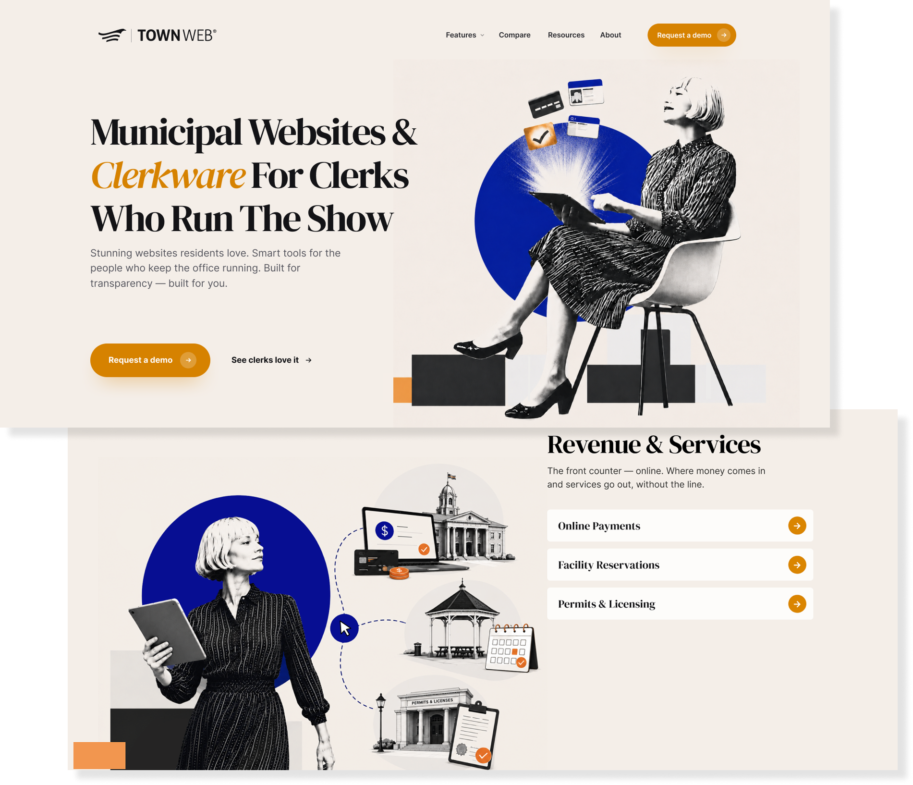

Clerkware
A unified website and visual direction for municipal software, designed to make the product feel clearer, more cohesive and easier to understand at first glance.

Make the offer feel like one product, not a collection of features.
I went into Clerkware thinking first about clarity and cohesion. Municipal software can become feature-heavy very quickly, so my plan was to create a stronger visual identity and a homepage hierarchy that explained the value before asking people to absorb the details.
Brand and interface decisions were designed together.
I explored typography, color, messaging hierarchy and UI as one system rather than treating the website as a skin added after the fact. I kept municipal users in mind throughout: the experience needed to feel capable and modern without becoming flashy, unfamiliar or difficult to scan.
A concept that shows how positioning can shape the interface.
The result is a more confident, unified direction that gives the product a clearer story and a stronger digital presence. It reinforced something I now bring into other website work: good visual design works harder when the information architecture and brand promise are pointing in the same direction.